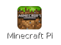
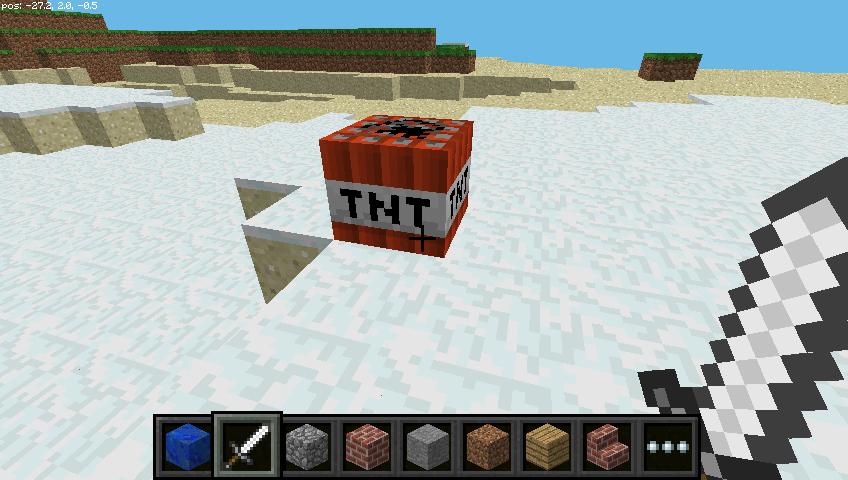

Minecraft Pi (Deutsch)
Hinweis: Dieses Tutorial wurde von Mitgliedern des Hackerspaces coredump in Rapperswil (Schweiz) übersetzt. Das Original findet sich hier. Verbesserungen sind auf Github willkommen.
Minecraft ist ein beliebtes Game, bei dem man in einer offenen Welt aus Blöcken alles mögliche bauen kann. Eine Gratisversion davon ist für den Raspberry Pi verfügbar. Im Gegensatz zur normalen Version ist es möglich, Minecraft Pi von aussen zu programmieren. Das heisst, dass du mit der Programmiersprache Python Befehle schreiben kannst, um z.B. automatisch ganze Gebäude zu bauen. Es ist eine super Möglichkeit um Python zu lernen.

Installation
Seit September 2014 ist Minecraft Pi auf allen Raspberry Pis vorinstalliert.

Falls du noch eine ältere Version nutzt, öffne ein Terminal-Fenster und tippe folgende Befehle ein (du musst dazu Internetzugang haben):
sudo apt-get update
sudo apt-get install minecraft-piSobald die Verarbeitung abgeschlossen ist, sollte Minecraft installiert sein.
Starten
Um Minecraft zu starten, doppelklicke auf das Desktopsymbol oder gib minecraft-pi in einem Terminal-Fenster ein.

Sobald Minecraft Pi geöffnet ist, klicke zuerst auf Start Game, dann auf Create new. Du bemerkst nun vielleicht, dass das Fenster leicht versetzt ist. Um es trotzdem zu verschieben musst du die Titelleiste, die hinter dem Minecraft Fenster versteckt ist, verschieben.

Du bist nun in Minecraft! Laufe etwas herum, zerhacke Blöcke und baue coole Sachen!
Nutze die Maus um dich umzusehen und verwende folgende Tasten:
| Taste | Aktion |
|---|---|
| W | Vorwärts |
| A | Links |
| S | Zurück |
| D | Rechts |
| E | Inventar |
| Leertaste | Springen |
| Doppel Leertaste | Fliegen / Fallen |
| Esc | Pause / Game-Menu |
| Tab | Maus freigeben |
Du kannst ein Element aus der Schnell-Auswahl auswählen indem du das Mausrad drehst, eine Zahl von 1-9 eingibst oder E drückst und dann etwas auswählst.

Du kannst auch fliegen, indem du die Leertaste zwei mal drückst. Wenn du die Leertaste gedrückt hälst, steigst du, und wenn du sie nochmals zweimal drückst fällst du wieder zu boden.

Mit dem Schwert in der Hand kannst du nun auf Blöcke klicken um sie zu zerstören. Mit einem Block in der Hand kannst du einen Rechtsklick benutzen um den Block vor dir abzusetzen.
Programmier-Schnittstelle
Wenn Minecraft läuft, gib die Maus frei indem du Tab drückst. Öffne IDLE (nicht IDLE3) auf dem Desktop und verschiebe die Fenster so, dass sie nebeneinander sind.
Du kannst entweder Befehle direkt eintippen oder eine Datei erstellen, so dass man die Befehle speichern und später erneut ausführen kann.
Wenn du eine Datei erstellen willst, gehe zu File > New window und File > Save. Am besten speicherst du die Datei in deinen Home-Ordner.
Mit dem import Befehl kannst du eine sogenannte Programmbibliothek aktivieren. Gib die folgende Zeilen ein, um eine Verbindung mit Minecraft herzustellen:
from mcpi import minecraft
mc = minecraft.Minecraft.create()Mit der Variablen mc kannst du nun Befehle direkt in Minecraft ausführen, zum Beispiel eine Chatnachricht senden:
mc.postToChat("Hallo Welt")Wenn du Befelhe direkt im Python-Fenster eingibst, drücke einfach Enter nach jeder Zeile. Wenn du eine Datei erstellst, speichere sie mit Ctrl + S und führe den Code mit F5 aus.
Wenn der Code ausgeführt wurde, solltest du die Chatnachricht im Game sehen:

Deine Position finden
Um deine Position zu finden, gib folgende Zeile ein:
pos = mc.player.getPos()pos enthält nun deine Position; du kannst auf jede Koordinate mit pos.x, pos.y und pos.z zugreifen.
Alternative kannst du auch jeder Position eine separate Variable zuweisen:
x, y, z = mc.player.getPos()Jetzt enthalten die drei Variablen x, y und z jeweils eine Koordinate. x und z sind die Lauf-Koordinaten (vorwärts/rückwärts und links/rechts) und y ist oben/unten.
Achtung: getPos() gibt die Position des Spielers zum aktuellen Zeitpunkt zurück. Wenn du dich bewegst, musst du den Befehl erneut ausführen um die neue Position auszulesen.
Teleportieren
Du kannst nicht nur deine aktuelle Position herausfinden, sondern dich auch an eine bestimmte Position teleportieren.
x, y, z = mc.player.getPos()
mc.player.setPos(x, y+100, z)Diese Befehle transportieren deinen Spieler 100 Blöcke in die Luft. Das heisst, du teleportierst dich in den Himmel hoch und fällst dann wieder gerade herunter.
Versuch dich doch mal an eine andere Position hin zu teleportieren!
(Tipp: Du siehst deine aktuelle Position im Minecraftfenster oben links.
Blöcke setzen
Du kannst einen Block mit mc.setBlock() an eine bestimmte Koordinate setzen:
x, y, z = mc.player.getPos()
mc.setBlock(x+1, y, z, 1)Nun sollte ein Steinblock direkt neben dir entstehen. Wenn er nicht direkt vor dir ist, ist er neben dir oder hinter dir. Gehe zurück ins Minecraft-Fenster und drehe dich bis der Block direkt vor dir ist.

Die Parameter, die dem setBlock Befehl übergeben wurden, sind x, y, z und id. Die drei Koordinaten (x, y, z) beziehen sich auf eine Position in der Welt. Wir haben mit x + 1 einen Block vom Spieler weg ausgewählt. Die id bezieht sich auf den Block Typ. 1 ist Stein.
Weitere Block-IDs die du ausprobieren kannst:
Luft: 0
Gras: 2
Erde: 3Jetzt wo du den Block siehst, kannst du ihn zu etwas anderem ändern:
mc.setBlock(x+1, y, z, 2)Der Block sollte sich nun vor deinen Augen von Stein zu Erde verwandeln!

Du findest alle Block IDs hier. Leider ist die deutsche Liste etwas unvollständig, die komplette Liste gibts aktuell nur auf Englisch.
Blöcke als Variablen
Du kannst eine Variable verwenden um eine Block ID zu speichern und sie so einfacher lesbar zu machen:
erde = 3
mc.setBlock(x, y, z, erde)Spezielle Blöcke
Es gibt einige Blöcke die speziell sind, zum Beispiel Wolle, welche es in verschiedenen Farben gibt. Diese Eigenschaften kannst du steuern indem du in der setBlock() Funktion einen fünften Parameter mitgibst:
wolle = 35
mc.setBlock(x, y, z, wolle, 1)Hier gibt der fünfte parameter 1 die Farbe der Wolle an. 1 bedeutet Orange. Wenn du diese Zahl nicht angibst, dann wird der Standardwert 0 verwendet, bei Wolle ist das Weiss. Ein paar weitere Farben:
2: Magenta
3: Hellblau
4: GelbProbiere ein paar weitere Zahlen aus und schaue zu wie die Blöcke sich verändern!
Weitere Blöcke mit speziellen Eigenschaften sind:
- Holz (
17): Eiche, Fichte, Birke, etc - Hohes Gras (
31): Buschland, Gras, Farn - Fackel (
50): Zeigt nach Osten, Westen, Norden, Süden
...und weitere. Die gesamte Liste findest du in der Dokumentation der Programmierschnittstelle, aktuell leider nur auf Englisch. Suche auf der Seite nach "Data Values of blocks".
Mehrere Blöcke setzen
Du kannst nicht nur einzelne Blöcke mit setBlock setzen, sondern mit dem Befehl setBlocks (beachte das s am Ende) auch einen Würfel damit ausfüllen:
stein = 1
x, y, z = mc.player.getPos()
mc.setBlocks(x+1, y+1, z+1, x+11, y+11, z+11, stein)Dieser Befehl füllt einen 10 x 10 x 10 mit Stein aus. Die ersten drei x/y/z Koordinaten geben die untere linke Ecke an, die folgenden drei x/y/z die obere rechte Ecke.

Du kannst mit setBlocks auch grössere Würfel ausfüllen, aber weil der Raspberry Pi nicht besonders schnell rechnen kann, kann das etwas länger dauern.
Blöcke beim Gehen fallen lassen
Der folgende Code lässt Blumen fallen während du herumläufst:
from mcpi import minecraft
from time import sleep
mc = minecraft.Minecraft.create()
blumen = 38
while True:
x, y, z = mc.player.getPos()
mc.setBlock(x, y, z, blumen)
sleep(0.1)Laufe nun eine Weile lang vorwärts und dreh' dich dann um. Hinter dir solltest du Blumen sehen.

Da wir eine while True Schleife verwendet haben, geht das ewig so weiter. Wenn du den Code abbrechen willst, drücke Ctrl + c im Python Fenster. Das c steht für "Cancel" (abbrechen).
Versuch mal durch die Luft zu fliegen und dabei Blumen zu hinterlassen!

Was, wenn wir nur Blumen fallen lasen möchten wenn der Spieler auf Gras geht? Dafür kann man getBlock verwenden, um den Block Typ an einer bestimmten Position herauszufinden:
x, y, z = mc.player.getPos() # Spieler-Position (x, y, z)
boden_typ = mc.getBlock(x, y-1, z) # Block ID
print(boden_typ)Dieser Code zeigt dir die ID des Blocks an, auf welchem der Spieler gerade steht (y - 1 bedeutet "1 Block unter dem Spieler").
Teste diese Zeile, indem du die Block-ID in einer Schleife ausgibst:
while True:
x, y, z = mc.player.getPos()
boden_typ = mc.getBlock(x, y-1, z)
print(boden_typ)Wir können nun mit dem if Befehl entscheiden, ob wir eine Blume pflanzen möchten oder nicht:
gras = 2
blumen = 38
while True:
x, y, z = mc.player.getPos() # Spieler-Position (x, y, z)
boden_typ = mc.getBlock(x, y-1, z) # Block ID
if boden_typ == gras:
mc.setBlock(x, y, z, blumen)
sleep(0.1)Vielleicht könnten wir den Boden auch zu Gras umwandeln, falls er es nicht bereits ist?
if boden_typ == gras:
mc.setBlock(x, y, z, blumen)
else:
mc.setBlock(x, y-1, z, gras)Nun können wir forwärtslaufen, und wenn wir auf Gras laufen, dann lassen wir eine Blume zurück. Falls es noch kein Gras ist, dann verwandeln wir den Block unter uns zu Gras.

TNT Blöcke
Ein weiterer interessanter Block-Typ ist TNT. Um einen normalen TNT Block zu setzen, benutze folgenden Code:
tnt = 46
mc.setBlock(x, y, z, tnt)
Dieser Block ist jedoch langweilig. Wenn du mit dem Schwert darauf schlägst, passiert nichts. Versuch mal, als fünften Parameter die Zahl 1 mitzugeben:
tnt = 46
mc.setBlock(x, y, z, tnt, 1)Verwende jetzt dein Schwert und klicke auf den TNT Block – er wird aktiviert und in ein paar Sekunden explodiert er!
Erstelle nun einen grossen Würfel von TNT Blöcken:
tnt = 46
mc.setBlocks(x+1, y+1, z+1, x+11, y+11, z+11, tnt, 1)
Jetzt siehst du einen riesigen Haufen TNT. Geh hin und aktiviere einen der Blöcke. Renne dann möglichst schnell weg, bis du in sicherer Distanz zusehen kannst! Es wird sehr langsam sein, da der Raspberry Pi so viele Sachen gleichzeitig berechnen muss.

API Referenz
Für eine vollständigere Dokumentation der API (Programmierschnittstelle), siehe stuffaboutcode.com. Leider ist die Seite jedoch bisher nur auf Englisch verfügbar.